第二章 读千份盈利预测不如看一眼走势
本章的标题是我所确信的。
你看看像通用汽车这样的股票，虽然1981年公司盈利增长，但股价却从58元跌到34元；而像格林威治制药公司这样的股票，虽然公司亏损，但1986~1987年其股价却从3元涨至19元！所以，记住：“走势说明一切”是千真万确的，我们要做的就是学会如何正确解读走势。
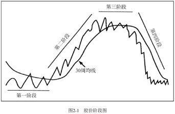
现在准备开始攻读“技术分析学位”吧。你要学的是如何运用我教给你的方法，让市场看起来不那么神秘莫测并能给你带来利润。请看股价阶段图（见图2-1）。人们常说“一幅图胜过千言万语”，这话不错，图2-1就是一个完美、鲜活的例子！请仔细看图2-1一分钟。从现在起你就要开始学习如何分析股票和市场了。一旦你掌握了这些盈利性的技术，在股票市场、期权市场、共同基金、大宗商品或者其他任何你能说得出名字的市场上，你的操作都会变得更加轻松，而且更具盈利性。你会有能力翻阅任意一本股票图形书籍，并且能够立即发现值得进一步研究和操作的几只股票，同时，不管报纸头条吹得如何天花乱坠，你都能淘汰那些根本不值得考虑的股票。
你只需要记住一个最基本的事实：任何一只股票都必然处于如下四个阶段中的一个，关键就在于如何确定某只股票所处的具体阶段。
图2-1显示了一个主要周期的四个阶段：
（1）底部阶段；
（2）上涨阶段；
（3）顶部阶段；
（4）下跌阶段。
第一阶段：底部阶段
股票XYZ持续下跌几个月之后，下跌动能终于耗尽，它开始横盘，实际上这是由于买方和卖方的力量逐渐均衡。在此之前卖方力量远强于买方，这也就是股价大幅下跌的原因。横盘时，交易量通常会萎缩直至枯竭，最终形成底部形态。不过在第一阶段后期，交易量通常会开始放大，而价格却基本不变。这意味着悲观的投资者抛售股票已经不会再使股价下跌，因为买方已经开始从卖方手中接手股票并接受了当前的价格，且未要求大的价格折让。这是一个利好的信号。
这个阶段的图形表现是：
①最初，30周均线停止下降并开始走平。股票间歇性的涨跌使得股价在均线上下震荡。
②在此阶段，价格通常会在交易区间的底部支撑价位和上方阻力价位之间来回震荡。此阶段可能会持续数月，有时甚至长达数年。
这个阶段也是很多市场参与者急于进入、希望抄到股价低点的时候。但是此时买进没有太大的好处。即使你抓住了低点，但你的资金可能会被困在这个阶段很长时间而股价却没什么变化。时间就是金钱。更糟糕的是，很多新手往往不够耐心，在沮丧地等待了数月后，在股价飙升之前将股票卖了出去。
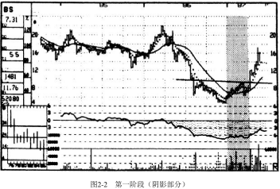
现在学习图2-2。伯利恒公司股价正处于第一阶段（阴影部分）。
1、注意，在从22元大幅下跌至4．875元之后，该公司股价开始上涨，并站上了移动平均线。
2、接着，一次小幅下跌又使得其股价稍稍低于均线。
3、第二次上涨伴随着交易量的放大，向上突破了水平的趋势线，同时其均线也开始抬升。
4、当伯利恒的股价超过9．835元时，它就已经准备好进入第二阶段了，股价在接下来的几周内涨至17．25元。
第二阶段：上涨阶段
理想的买入时机是当一只股票最终脱离底部阶段，进入更有活力的上涨阶段时。股价突破阻力区域上方并站上30周均线，此时成交量应该显著放大。这就是第二阶段上涨阶段的开始。不过，在第二阶段真正具有活力的上涨来临之前，在最初的上涨后至少会有一次回调。这次回调使得股价跌回至突破点附近，这是低风险买入这只股票的第二次良机。（注：即离开，拉回）
不要在意每股几分钱的成本差异，例如，向上突破发生在12．125元，回调时可能跌至12．375或12．625元。回调的幅度越小，向上的力量就越强。特别有意思的是，在向上突破点——最好的买入时机——公布的基本面消息通常都是负面的。除非你的经纪人认同技术分析，否则此时他会建议你不要买进这只股票。
在第二阶段的突破发生后不久，30周均线通常会开始转而上扬。每一次上涨的高点都比前一次的高点还要高，对于买方来说，这感觉太美了。另外，低点也一次比一次高。这一点非常重要！涨势再牛、再强劲，也不可能只涨不跌。
图2-3国际纸业的走势证明了我所说的。当1986年初这只股票进入第二阶段之后，股价所有的调整都高于上升的30周均线，并且每次上涨都带领股价创出新高。市场总是很狡猾，这就是为什么多数投资者在市场上经年累月地亏损。股票市场（或其他类似的任何市场）总是不让大多数人赚钱，而给予少数精明的职业投资者丰厚的回报。上涨趋势中也有下跌。只要所有的这些震荡和波动发生在上升的30周均线以上，就不用担心——一切顺利进行，大额利润正在累积。
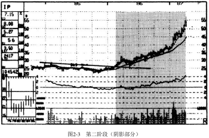
令人欣喜的上涨持续了几个月之后，随着基本面的利好消息公布，越来越多迟到的投资者赶上了股价上涨的快车。最终，股价上涨减缓，离它的移动平均线越来越近。移动平均线的上升斜率也明显减小。在这个时候，“持有”就可以了。尽管仍然处于第二阶段，但股票的交易价格已经远高于支撑水平和均线，各个投资社区都在谈论它，股票已经超买，不应该再买入了。这时如果买入，你就会承担相当大的风险。
从投资的角度来看（下一章我们会从交易的角度出发），合适的买入时机应该是在最初的突破点，或者最初突破点后紧接着的回调处（见图1-6中股票XYZ在12.125元处）。此时，股价接近于底部阶段，继续下跌的风险很小而上涨的可能性很大。回报／风险比率完全对我们有利。然而几个月后，形势已经明显不同。越接近第二阶段的后期，股价的波动就越不规律，因为先前的买家非常想脱手以保住自己丰厚的利润。而市场的新手们接手这些股票，以为自己发掘了牛股，捡到了便宜。此时，这只股票就成了市场谣言和各种相关报道讨论的对象，同时买卖双方的决定也会受到情绪的较大影响。
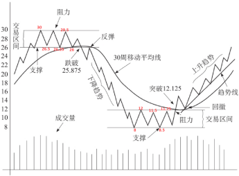
我已记不清自己见过多少次因为某只股票的买入时机不对，导致整个投资组合严重亏损的情况。要遵守投资纪律！如果你是一个长期投资者，那么仅在第二阶段初期合适的进入点买入（在股票XYZ的例子中为12.125元附近）。如果你没有在合适的点买入，不要焦虑，继续关注并且坚持只以应该买入的价格买入。一以贯之。
要么买对，要么不买。这里需要的只是一点常识。如果你在12.125元处未能买入，在12.875元处买入不算大错，但在25元或26元处还要买入就大错特错了！如果你已经错失了一只好股票，不要觉得难受，你可以从市场上的上千只股票中进行挑选，总会有处于合适价位的好股票。就像我们打车一样，虽然你错过了第一辆，但下一辆很快就会到来的。
第三阶段：顶部阶段
终于，所有的好事都走到了尽头。在股票市场上，这以第三阶段顶部形态出现为标志，这时，上涨的动力消失，股价开始横盘。图形现象背后的实质是买卖双方再次势均力敌。在第二阶段，买方力量要远强于卖方。现在上涨结束了，股价处于均衡状态，此时形成的形态如同第一阶段的镜像。
在第三阶段，成交量通常较大，股价波动剧烈。如果你听过一种说法，说某个股票被“搅拌”（以大成交量横盘），第三阶段就是这样的例子。巨大的成交量是由两方面原因引起的：
①对买方来说，他们因基本面的利好消息和各种“故事”而兴奋；
②与此同时，之前低价买入的人急于将获利盘抛售。
下面就来说说所有这些在图形上是怎么表现的。首先，30周均线的向上斜率变缓继而开始走平。在第二阶段里，股价即使下跌也仍然会在移动平均线之上，而现在股票价格在均线上下震荡。一旦第三阶段的顶部开始形成，交易员就应该带着已获利润离场！而投资者有更多的回旋余地，我建议投资者将一半的仓位出清以锁定利润。因为股价有可能再次向上突破，开始又一个第二阶段上涨，这样你剩下的一半仓位就能在新的第二阶段里赚取再次上涨的利润。但为了保护你剩下那一半仓位的利润，你得在稍低于新的支撑区域底部（见图1-6中的25．875元）设置一个保护性止损卖单。现在，知道这是一个好的市场策略就可以了。在下一章里，我会告诉你如何正确地设置止损位——一百个投资者中知道如何操作的还不到一个，这是在股票市场成功真正的秘诀之一。
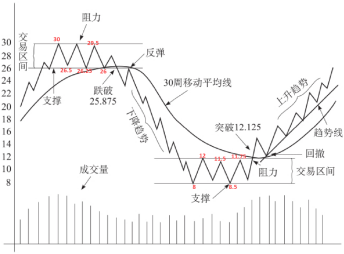
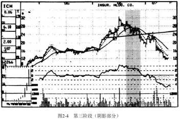
图2-4中ICH公司的图形完美描述了第三阶段（阴影部分）。注意移动平均线是如何停止上升，股价又是如何跌破均线然后短暂收复的。尽管当时这只股票的市盈率只有10倍，并且盈利还在上涨，但明显它已经陷入了困境。一旦股价向下跌破24元，第三阶段就结束了，第四阶段登场。在第四阶段，这只股票在接下来的六个月里跌幅超过50%，这发生在史上最大的牛市中！
在第三阶段你必须仔细调整自己的情绪，因为盈利增长、股票分拆等关于股票的利好消息正热火朝天，让人兴奋不已。此时，同以往一样，你仍应该始终相信图形，因为它与你我不同，它不带情绪。通过学会一以贯之地跟随市场留下的图形脚步，我们还可以学会冷静、沉着并认真计算，而此时其他的投资者还反复被贪婪与恐惧综合征折磨着。因此，你要记住：无论基本面信息如何好、利好消息如何可信，你都绝不要在这个阶段买入某只股票，因为此时回报/风险比率对你十分不利。
第四阶段：下跌阶段
在这个阶段，之前维持股价的各种因素，让位给充满疲劳、压力、恐惧的卖方。在图形中是这样表现的：
在交易区间震荡运行之后，股价最终跌破支撑区域的下限。股票XYZ的图形（见图1-6）显示支撑区域在26~26.5元，阻力区域在30元左右，还有一条基本水平的移动平均线。与向上突破需要明显放大的成交量来确认不同，第四阶段的向下突破并不一定需要成交量的明显放大来确认。
一个成交量放大的向下突破跟着一个成交量萎缩并拉回突破点的反弹是非常危险的信号。我也见过很多股价向下突破进入第四阶段后成交量相对较小的例子，接下来的几个月内股价照样跌得很厉害。因此，向下突破中的成交量放大意味着更加糟糕的情况，但也不要错误地认为成交量不大就比较安全[1]!不管怎么样，你都应该卖出这只股票。
如果你的经纪人信奉价值投资，他可能试着说服你不要卖出某只股票，因为它的盈利和其他的基本面都还不错。当第四阶段开始的时候，人们还常常以为这是股价的一次向下调整。这够傻的。一旦股价向下突破，进入第四阶段，那么它上涨的可能性就非常小了（一旦向下突破发生，股票XYZ原来的26~26.5元的支撑区域就成为新的顶部，或者说是阻力区域），而下跌的风险很大。
注释[1]当寻找卖空标的时，放巨量向下突破的更好，因为巨大的成交量意味着卖方十分急迫，通常这种股票下跌得非常快。
现在，停下来，想一秒钟，然后对自己做个保证。保证自己绝不会在第四阶段买任何股票。同时保证自己绝不会持有任何跌入第四阶段的股票。在本书后面的章节里，我会告诉你如何设置止损位以使你的后一个保证很容易做到，这样一来，当你的股票进入第四阶段，卖出就会自动执行，以防你犹豫不决、思考再三。这会是一种机制和纪律。
不要幻想力挽狂澜。在第四阶段里硬撑的代价很大，这样做的人有“受虐倾向”。眼睁睁看着自己辛苦赚来的钱白白流走一点都不可取，也一点都不能塑造强硬的性格。为了学习关于市场这极其重要的一课，你应该听听肯尼•罗杰斯的歌曲《赌徒》。我不是开玩笑，这短短一首歌中所蕴含的市场策略，比华尔街流传的陈词滥调有用得多。想想这些智慧之语：“你一定要知道何时拥有，知道何时加注，知道何时离开，知道何时逃跑。”
无论你玩的是扑克牌还是股票市场，学会根据概率来参与游戏以及采用专业技巧是十分重要的。
如果在阅读本书之后，你没有学会其他的市场操作方法，只学会了不在第四阶段买入或持有股票，我能够百分之百地保证你的平均投资收益率会大大提高。当你看见下一年的个人所得税申报表，你会怀疑是会计搞错了。当然，不要错误地理解我的意思——要想成为真正的市场大赢家，你还有很多东西要学习，但不要在第四阶段买入或持有股票这个策略太重要了，所以我要再三强调。
“市场分析师”肯尼•罗杰斯接着告诉我们：每个赌徒都明白生存的秘诀是，要知道扔什么牌，留什么牌，因为每手牌都可能赢，每手牌都可能输。”
这个观点也是正确的。多年来我见过许多投资组合，其中上涨的股票多于下跌的股票，但最终这些投资组合却损失惨重。新手们在赚了点小钱之后就迅速卖出了上涨的股票，而守着那些下跌的第四阶段的股票。然而，成熟的投资者会稳拿第二阶段的股票，“吃到”所有涨幅才离开，同时迅速抛出有问题的股票。因此，“知道扔什么牌，留什么牌”非常关键。
回想一下你自己的投资经历。有多少次你持有的股票应该在50元卖出，而你却一直看着它跌至47元、45元甚至40元？你的经纪人是如何握着你的手向你信誓旦旦地保证这只股票还值50元的？遗憾的是，这是在误导你。你的经纪人可能还会跟你说：如果这只股票在50元买入是合算的，在40元买入就更加合算。于是，你没有卖出。而且还错上加错在40元加仓了，这可是危险而糟糕的策略。
你告诉自己只要股价回到45元，就能够解套。几个月后，这只40元的“便宜”股票跌到25元，下跌背后的基本面利空消息此时众所周知了。第一阶段底部开始形成时，你承受着巨额亏损将所有的股票卖出。
上面的故事是不是听起来很熟悉？这样的噩梦不会再发生在你身上了，股价下跌时，你不会再任由摆布，期望底部早日到来。相反，你可以掌控这种情形，抛掉任何有可能进入第四阶段的股票——无论你此时是盈利、保本，还是亏损。
请记住，市场有自己的运行机制，它不知道也不关心你是在什么价位买入的。所以当你判断某只股票即将下跌时，果断地跟它说再见！否则你的盈利就会消失，你的小损失会扩大成巨额亏损。

我们回到图1-6的股票XYZ。请注意它首先在25.875元处向下突破，然后跌至23元，这是第一波下跌。接着，由于想以“折扣价”买入的投资者觉得此时的价格比之前便宜而进行买入，所以股价一次或几次反弹至突破点附近。从那以后，真正的下跌趋势开始了，移动平均线也开始下降。
从回报／风险比率的角度看，这是整个股票周期中最危险的时候。当你想到自己不会再陷入这样的困境，并且盈利能力更强时，那将多么令人兴奋。当你打开行情软件，你会发现这只股票仍在大量交易——还有人在买入。很高兴那不会是你。
在第四阶段，每一次下跌都创出新低，而每一次超卖后的反弹都低于前一次的高点。这是典型的下跌趋势。更糟糕的是，所有的这些负面表现都发生在下降的移动平均线的下方。遗憾的是，正是在这个阶段，初学者以为股票已经跌得差不多了，以捡便宜的心态去买入。然而，捕捉下落中的火星注定会将自己灼伤！
请看图2-5中利维兹家具公司20世纪70年代初期以后的走势。你会发现在第四阶段（阴影部分），初学者妄图抄底，结果让其辛苦挣来的资金遭受了毁灭性打击。为了不掉入这样的陷阱，你应该学习图形并解读它提供的信息，它让你在追求大额利润的过程中保持冷静，遵守纪律。
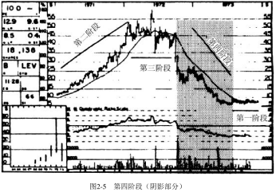
买的是数字
现在你理解了阶段分析的概念。研读图2-6至图2-9所示的四个图形，每个图形聚焦于一个阶段，确保你同意我对图形阶段的划分（记住：移动平均线是个股技术分析的重要起点）。
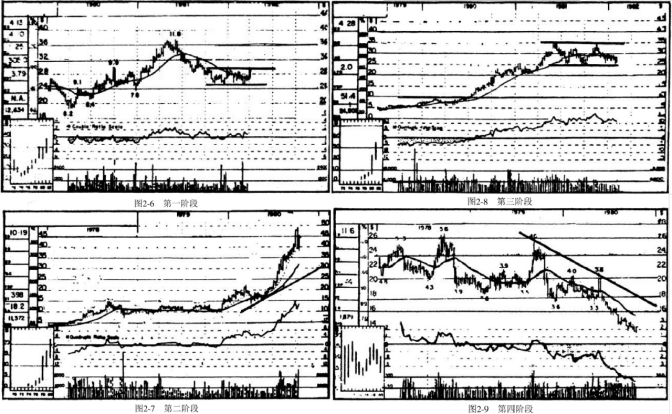
股价阶段测试
下面有一个小测试。仔细观察下面的股票图形，说出每个图形当期处于哪个阶段。研究它们直到你与答案中的判断一致，因为只有现在清楚地理解我的方法，才能保证你未来获利。答案在这些图形后面。
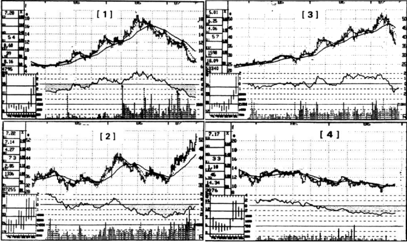

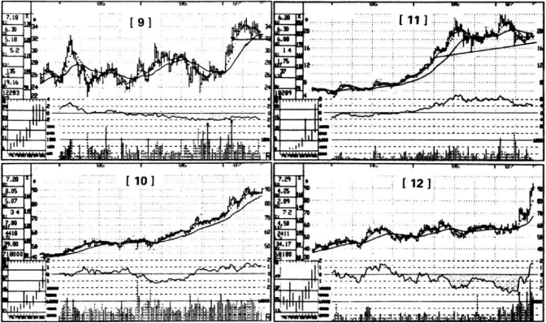
答案
1．第四阶段。移动平均线下降，股价位于其下方。
2．第二阶段。移动平均线上升，股价位于其上方。
3．第四阶段。移动平均线下降，股价位于其下方。
4．第一阶段。移动平均线走平，股价位于阻力位下方的底部区
5．第三阶段。移动平均线走平，第二阶段大幅上涨后股价围绕均线上下震荡。
6．第一阶段。移动平均线走平，股价位于阻力位下方的底部区域。发生于第四阶段的大幅下跌之后。
7．第四阶段。移动平均线下降，股价位于其下方。
8．第二阶段。股价向上突破重要的阻力位：9元。第一阶段完成。股价站上抬升的均线。
9．第三阶段。在第二阶段大幅上涨后，移动平均线趋向水平，股价围绕均线上下震荡。
10．第二阶段。股价位于移动平均线上方，这样的情形持续时间超过1年，移动平均线是上升的。
11．第三阶段。这幅图形十分诡异，因为潜在的顶部很大，筑顶时间长达一年。然而，移动平均线依然保持水平，股价围绕其上下震荡。此外，股价始终在它主要的支撑区域以上，所以还没有进入第四阶段。
12．第二阶段。股价远高于上升的移动平均线。
真实的世界
现在你对股价图形分析已经有一些了解了，我们来看看现实生活中在第二阶段大幅上涨和第四阶段灾难性下跌的例子，以此来说明这个方法并非“纸上谈兵”。事实胜于雄辩。虽然没有什么预测市场的方法是万无一失的，但结果可能好到令你难以置信！
在接下来的章节中，我会教你如何按计划在一些不利的情况下将负面结果降到最小。请看图2-10至图2-13这四幅图形。应该按照《专业价格分析者》的推荐在它们进入第二阶段时买入这些股票——那时它们都刚刚向上突破且处于第一阶段底部（见图中箭头处）。
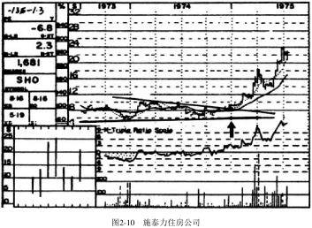
施泰力住房公司（见图2-10）的股价在1975年初站上10元时，筑好了第一阶段底部。接着其移动平均线开始上升，股价也一路上涨、上涨，逐渐抬升。在那以后6个月里，股价上涨到24元，其间所有的回调都高于上升的移动平均线，年涨幅高达280%！
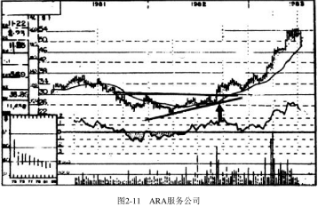
ARA服务公司的图形（见图2-11）显示，在1982年当它以巨额成交量向上突破30元的时候，出现了跟施泰力住房公司同样的上涨模式。在后来9个月里，其股价上涨到55元左右，年化收益率高达100%。同样，所有的回调都没跌破上升的移动平均线。
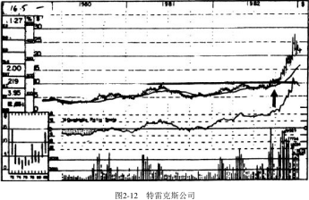
特雷克斯公司（见图2-12）股价向上突破10元时也伴随着巨额的成交量。毫不意外地，这只股票在其后3个月里的年化收益率达到了惊人的689%。我们再一次注意到它所有的向下回调都明显高于上升的30周移动平均线。
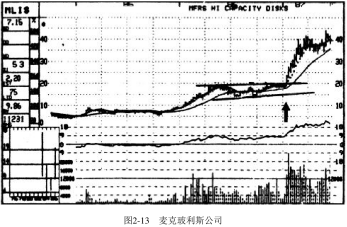
最后一个关于第二阶段上涨的例子是《专业价格分析者》于1986年末推荐的麦克玻利斯公司（见图2-13），当它以巨额成交量向上突破19．5元后，短期内年化收益率就达到了250%。这只股票是四个例子中唯一不是在股价突破第一阶段并进入第二阶段时被推荐的。事实上，这只股票在1986年初就向上突破10元附近的阻力区域进入了第二阶段。接着，它看起来很像要形成一个第三阶段顶部（在15元附近的支撑区域与19．5元附近的阻力区域之间）。结果，当它以大成交量站上19．5元时，它迎来第二次突破的成功。这种情况相对比较少见——看似要形成第三阶段顶部，但最后再次进入第二阶段。这是一种强有力的形态，对交易员来说十分有利可图。所以，长期投资者大多在底部附近买进，此时风险极低，而交易员则要留心本例这种情况，因为它们通常非常强劲而快速！
下面再来看另外几只股票（见图2-14至图2-17），如果当它们完成第三阶段进入第四阶段时你没有将它们卖出，就会极大拖累你的投资组合。令人欣慰的是，这四只股票在它们进入第四阶段时，都被《专业价格分析者》列为“卖出”。
回望1973年，雅芳是在那个时代所谓的“只管买进”的股票之一。许多聪明而懒惰的资金管理者说服他们自己：对于这些始终上涨的股票他们所需要做的唯一决定就是何时买入。千万不要相信这样的童话。世界上没有一项投资是买入以后不用管的，无论是股票、黄金、房地产、珠宝，或是商品期货。所有的投资都有周期性，一旦你在下降过程中（第四阶段）还持有它们，你会在财务和情绪上受到双重打击。当雅芳的股票结束了第三阶段进入第四阶段以后，它的每股盈利是2．26元；当它以每股不到80元的价格交易时，每股盈利为2．30元（滞后12个月）。如果你掉进了持有陷阱并相信股价最终会反弹回来，那我告诉你，此后的14年这只股票从未接近过当年140元的高点或120元的向下突破点，14年后仍然在30多元处挣扎。
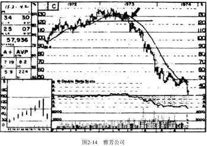
请看图2-14雅芳的股票图形，你会发现它和你应该熟悉的某些描述是完全吻合的。股价向下突破支撑区域，跌向110元。接着，反弹至120元出头的突破点附近。之后，真正的第四阶段登场，下一年里每一次的反弹都被下降的移动平均线压制，在这个阶段，数百万股的买入全是受危险的“猜底”驱动的（因为股价在80元时似乎很“便宜”， 接着70元，然后60元）。如果你学习我的方法，并严格执行，这样的事情就再也不会发生在你身上。
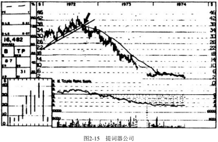
当有线电视节目开始大受欢迎时，提词器公司（见图2-15）成为那个时代的又一只明星股票。尽管其基本面令人振奋，但当其股价跌破移动平均线和重要的趋势线以后，提词器公司股票就明显地完成了顶部的构筑。股价开始急速跌至30元，接着又反弹至突破点。之后，提词器公司遭遇了报复性的跳水，一路下跌。所有的反弹都止于或低于移动平均线，跌幅超过90%。
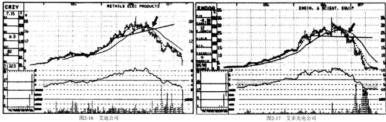
就像一句谚语所说：“万变不离其宗。”这样的危险形势同样出现在1986年末。这一次，两只新秀——艾迪公司（见图2-16）和艾多光电公司（见图2-17）——在之前的超级牛市中一飞冲天。就好像是为了证明基本面分析的局限性一样，在艾多光电股票大跌前几天，一家较大的经纪公司还对这只股票给予了“买入”的推荐。之后的情形再一次像你预计的那样。在这两个例子中，当第三阶段的顶部构筑完成以后都出现了明显的卖出信号：先是股价快速下跌，接着有一次反弹，其后卖压轰鸣而至，使得所有超卖后的反弹都没有站上移动平均线。
我敢说，类似的情形在未来还会一再发生。这些曾经迷人的股票将会轰轰烈烈地下降，而打算抄底和捡便宜的人这时会去抓住他们以为的“大机会”。而你的投资策略非常清晰：卖出以避免第四阶段的下跌。在某些情况下你甚至可以进行卖空操作——我们以后会谈到——当公众的损失增大并抱怨他们运气不佳的时候。
你是否有了全面的了解？通过让市场消化已知和预期的所有相关基本面信息，跟随市场的判断而不是你读到的新闻报道或券商报告，你的平均收益率就会显著提高。
在我的研讨会上经常出现的问题是：“你的这种方法能否运用到其他领域，像大宗商品或者共同基金？”答案很简单——当然可以！以供求关系为基础进行交易的任何领域，都可以进行图形分析并用完全相同的形式进行解释。不过需要注意：在大宗商品市场或股指期货市场，其时间框架将大幅缩短，第二阶段的上涨可能在几周内就完成了，而不需要几个月（注：为何？）。所以你需要一条较短期的移动平均线（注：为何？短期均线能说明什么？方向转折的快速变动吗？）。
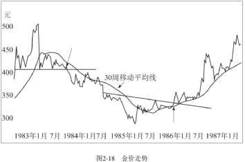
现在请看现货黄金周线图（见图2-18）和它的30周移动平均线。在1983年，黄金从第三阶段顶部下跌（向下的箭头）至第四阶段，在这一过程中，人们无休止地谈论通货膨胀，并觉得金价会涨到每盎司1000~2000元。在接下来的几个月里，黄金价格下跌至300元以下。1985年，当通货膨胀下降至很低水平，公众期望黄金价格进一步降到150~200元再买入时，底部形成了，移动平均线停止了下降。当黄金价格向上突破平缓的下降的趋势线时（向上的箭头），一个新的黄金牛市来临了，在这个牛市中，黄金价格涨至近500元！
最后，如果你打算做共同基金的申购赎回，这个方法也是很有用的，特别是对于投资于无佣金和低佣金的行业基金很有帮助。行业基金是你应该掌握的一种投资工具，我们在后面会详细讲到。现在，请看图2-19。你可以看到，如果当杰纳斯基金进入第二阶段时就买入它的话，获利是相当容易的。1982年9月，这只基金结束第一阶段底部之后价格在3．5元左右（见箭头），正向上突破其下降趋势线。
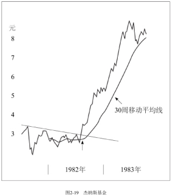
无论你对基本面的价值分析多么热衷，我都希望你能明白技术分析方法的价值。随着接下来各章节内容的深入，你会更有信心和能力去运用这种方法。所以，继续阅读、消化、思考。以后在你听到某人轻易贬低技术分析时，一笑而过，不用争辩。投资者之间的分歧是非常重要的。如果每个人都使用技术分析方法，对涨跌都有一样的看法，那么市场第二天就无法运行了。另外，如果我们想要在市场上获得可观的利润，我们需要“无知的大多数”。